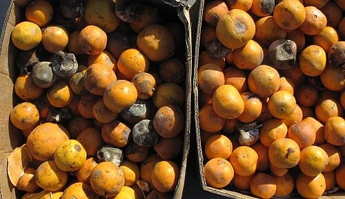

果发霉
果皮出现霉层
这是与该表现相符的一种可能原因，请结合下方特征核对。

先看哪里
查看霉层下的组织是否软化，果实间是否拥挤或有碰伤。
可能原因与下一步
腐败果可能影响相邻果。移除受害果，改善周围通风，检查下一批果实。
怎样区分相似问题
找是否有绒毛直接从受损组织上长出。远看相似的泥点或灰尘，下面的组织可能仍很结实。
现在可以做什么
清除贴在受损处的残花和腐败组织，减少表面长时间潮湿，给拥挤枝梢留出通风空间。
接下来观察什么
若腐败向坚实组织或邻近果实蔓延，清理前拍下扩展边缘。